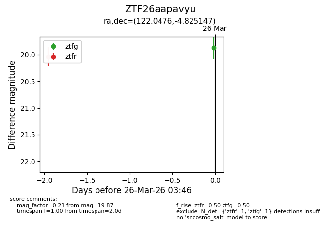
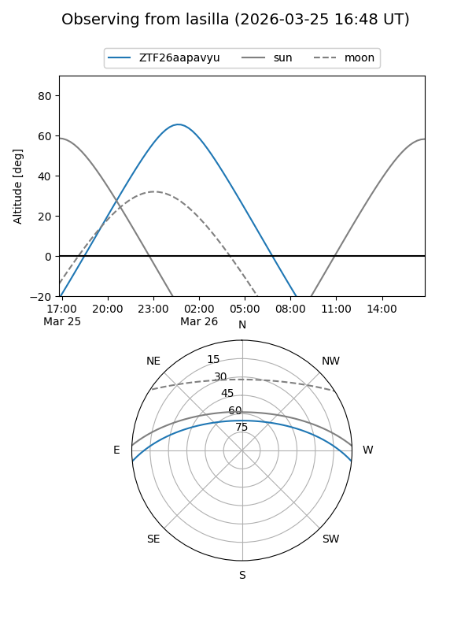
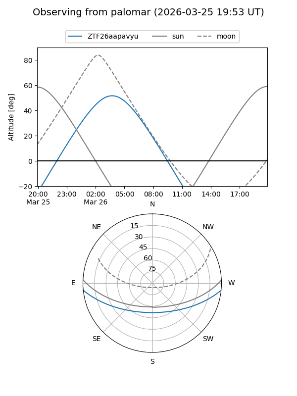
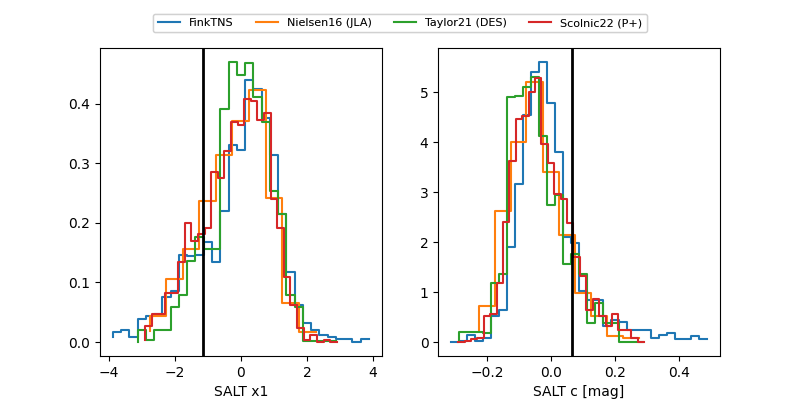

ZTF26aapavyu
Target ZTF26aapavyu at 2026-03-26 03:49
Aliases and brokers:
FINK: link
Lasair: link
ALeRCE: link
alt names
ZTF26aapavyu (ztf,fink_ztf)
Coordinates:
equatorial (ra, dec) = 122.0476,-4.82515
equatorial (HMS+DMS) = 08:08:11.42,-04:49:30.53
galactic (l, b) = (226.3318,+14.66228)
Flags:
Photometry:
last ztfg=19.87, ztfr=20.04
1 ztfg, 1 ztfr detections
Lightcurve

Visibility


Additional plots
